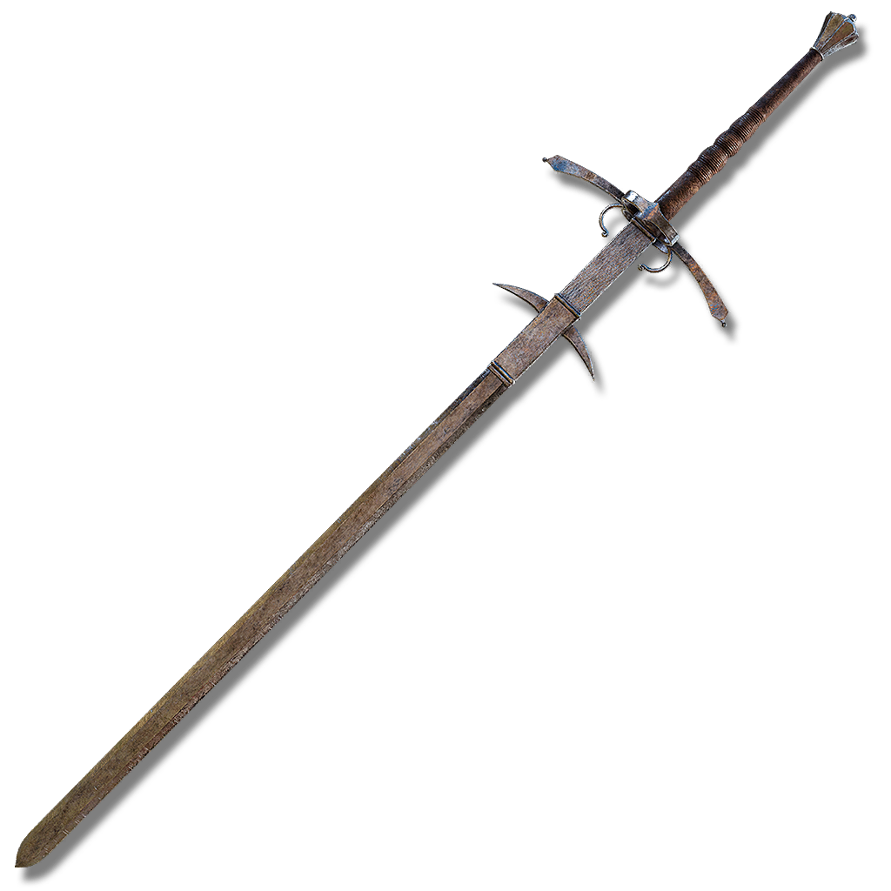
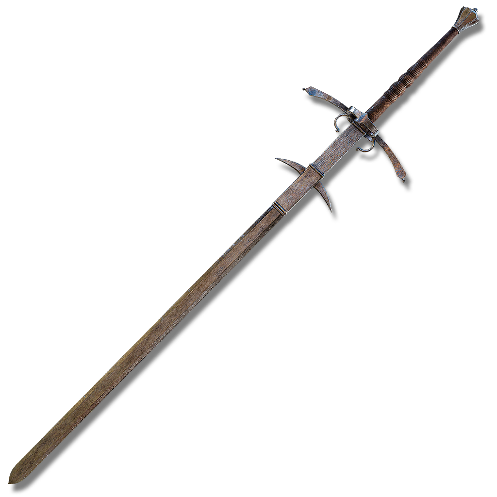
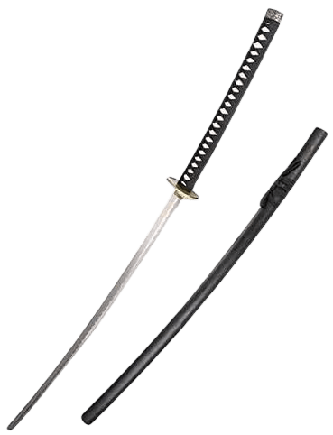
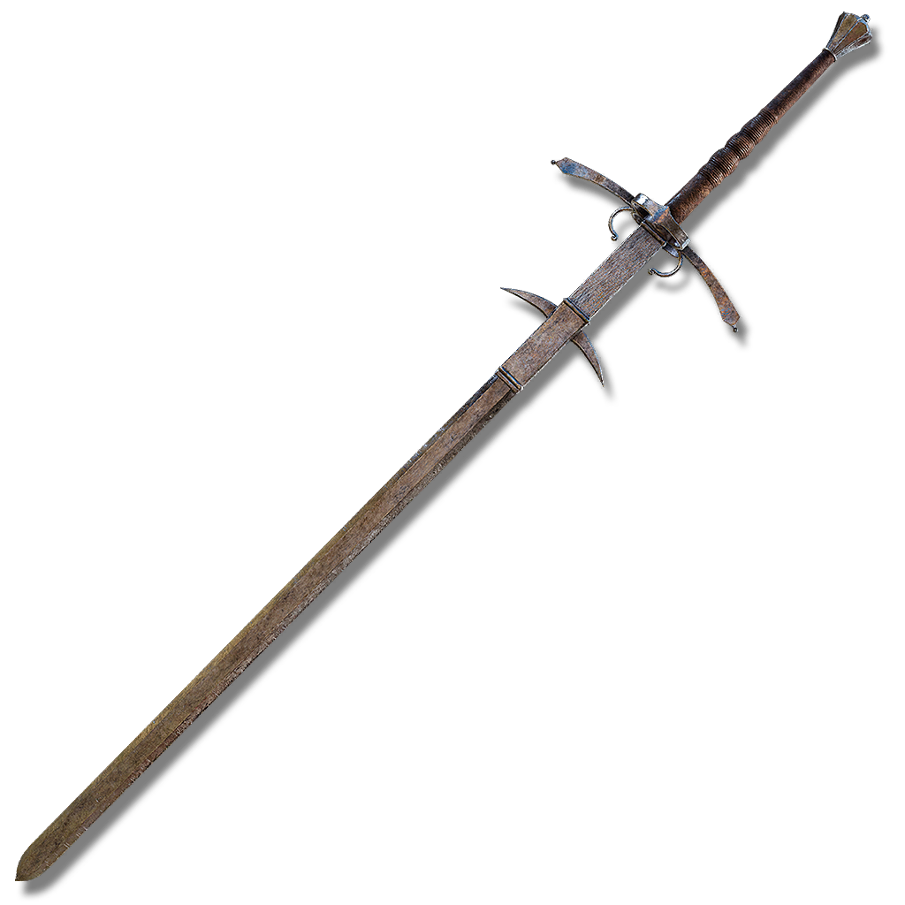

Alguns tipo de espadas


 

 Espada
Medievalㅤㅤㅤㅤㅤㅤㅤㅤㅤㅤㅤㅤㅤㅤ
Espada
Medievalㅤㅤㅤㅤㅤㅤㅤㅤㅤㅤㅤㅤㅤㅤ
- Katanaㅤㅤㅤㅤㅤㅤㅤㅤㅤㅤㅤㅤ
 Espadas Duplasㅤㅤㅤㅤㅤㅤ
Espadas Duplasㅤㅤㅤㅤㅤㅤ-
Espada
Zweihanderㅤㅤㅤㅤㅤㅤㅤㅤ
-

- ㅤㅤㅤ
- Nodachi
A página é dedicada a mostrar os tipos diversos de espadas.
As espadas são armas brancas que surgiram por volta de 3000a.c na idade do bronze. Tem como características uma lâmina longa e empunhadura.

Espada
Medievalㅤㅤㅤㅤㅤㅤㅤㅤㅤㅤㅤㅤㅤㅤ
Espadas Duplasㅤㅤㅤㅤㅤㅤ
Espada
ZweihanderㅤㅤㅤㅤㅤㅤㅤㅤMe chamo Lorenzo Dias, e eu criei esta página pois gosto de espadas e também por que queria informar sobre as variedades de espadas pelo mundo(obs:não mostrei todas).